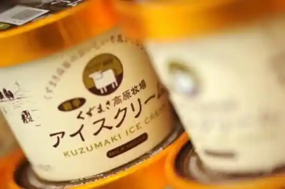
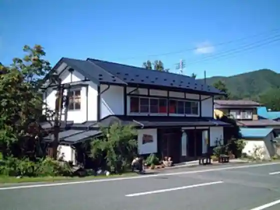

Kuzumaki Kogen Aisukuriimu
Kuzumaki, Iwate · 0195-66-0711 · Official / source link

Mori no Soba Ya
Kuzumaki, Iwate · 0195-66-4111 · Official / source link

Kuzumaki Nabe
Kuzumaki, Iwate · 0195-66-2111 · Official / source link
Kuzumaki Kogen Gyunyu
Kuzumaki, Iwate · 0195-66-0030 · Official / source link
Kuzumaki Wain
Kuzumaki, Iwate · 0195-66-3111 · Official / source link
Michi Kusa no Eki (Eki) Shutchohambai no Mi
Kuzumaki, Iwate · 0195-66-3616 · Official / source link
Mabuchi Kawa Gensen
Kuzumaki, Iwate · 0195-66-2111 · Official / source link
Yama Budo Wain Kojo
Kuzumaki, Iwate · 0195-66-3111 · Official / source link
Roadside Station (Kuzumaki Highlands)
Kuzumaki, Iwate · 0195-66-0711 · Official / source link
Mori no Kan Uddei Sumi no Science Museum
Kuzumaki, Iwate · 0195-66-3111 · Official / source link
Sodeyama Highlands
Kuzumaki, Iwate · 0195-66-2111 · Official / source link
Embetsu Gaku
Kuzumaki, Iwate · 0195-66-2111 · Official / source link
Shichi Taki
Kuzumaki, Iwate · 0195-66-2111 · Official / source link
Kuzumaki Forest Park
Kuzumaki, Iwate · 0195-66-0211 · Official / source link